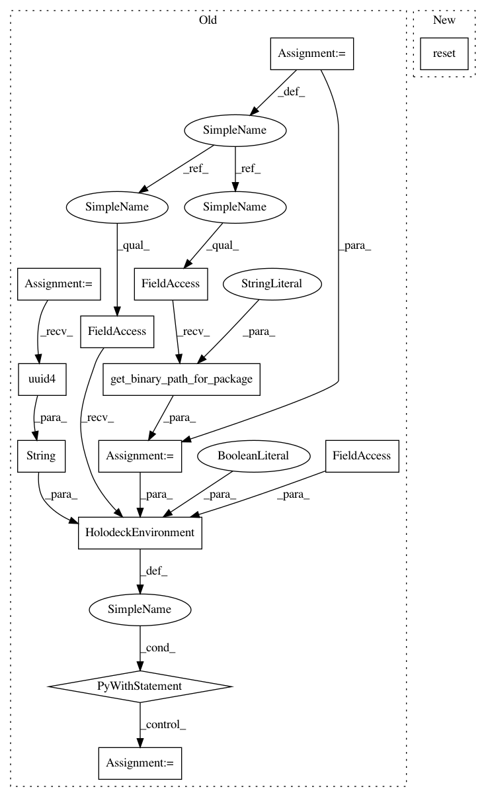

fdbee5cdec64567660ef77f3e78fadd6d5438dd1,tests/agents/test_set_physics_state.py,,test_set_physics_state_vel,#,61
Before Change
binary_path = holodeck.packagemanager.get_binary_path_for_package("DefaultWorlds")
with holodeck.environments.HolodeckEnvironment(scenario=sphere_config,
binary_path=binary_path,
show_viewport=False,
uuid=str(uuid.uuid4())) as env:
new_vel = np.array([50, 0, 0])
//This should change the velocity of the agent.
env.agents["turtle0"].set_physics_state([0, 0, 0], [0, 0, 0], new_vel, [0, 0, 0])
new_state = env.tick()
sensed_vel = new_state["VelocitySensor"]
//Check to see that the newly sensed vel is what we wanted to set it too.
assert almost_equal(new_vel, sensed_vel, 0.0, 0.3), "The velocity was not set correctly!"
def test_set_physics_state_ang_vel():
Validates that the set_physics_state function correctly sets the angular velocity of the agent.
There is no angular velocity sensor so it checks to see if the agent is spinning (rotation changes)
after changing the angular velocity.
After Change
set_physics_state_env.reset()
new_vel = np.array([50, 0, 0])
//This should change the velocity of the agent.
In pattern: SUPERPATTERN
Frequency: 4
Non-data size: 13
Instances
Project Name: BYU-PCCL/holodeck
Commit Name: fdbee5cdec64567660ef77f3e78fadd6d5438dd1
Time: 2020-11-07
Author: powley.matthew@gmail.com
File Name: tests/agents/test_set_physics_state.py
Class Name:
Method Name: test_set_physics_state_vel
Project Name: BYU-PCCL/holodeck
Commit Name: fdbee5cdec64567660ef77f3e78fadd6d5438dd1
Time: 2020-11-07
Author: powley.matthew@gmail.com
File Name: tests/agents/test_set_physics_state.py
Class Name:
Method Name: test_set_physics_state_collision
Project Name: BYU-PCCL/holodeck
Commit Name: fdbee5cdec64567660ef77f3e78fadd6d5438dd1
Time: 2020-11-07
Author: powley.matthew@gmail.com
File Name: tests/agents/test_set_physics_state.py
Class Name:
Method Name: test_set_physics_state_ang_vel
Project Name: BYU-PCCL/holodeck
Commit Name: fdbee5cdec64567660ef77f3e78fadd6d5438dd1
Time: 2020-11-07
Author: powley.matthew@gmail.com
File Name: tests/agents/test_set_physics_state.py
Class Name:
Method Name: test_set_physics_state_loc_and_rot